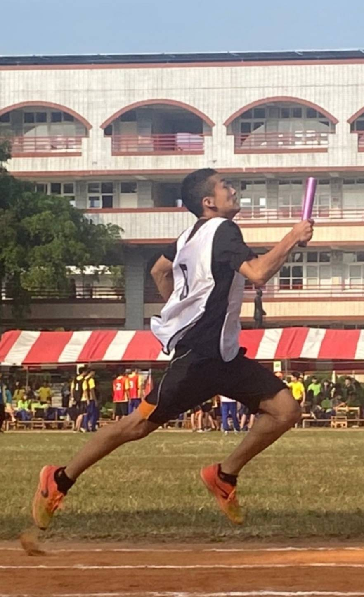

大家好
我是蕭融蔚
屏東科技大學/資訊管理系
假日的空閒我喜歡出去踏踏青，看看不同的風景，我的愛好是運動，目前正在學習HTML與C語言，未來想往物聯網(IoT)或企業資源規劃(ERP)等方面繼續專研。
Contact Information
聯絡資訊
- 手機:0988361933
- Email:lig5388@gmail.com
- LINE ID:qq911208
- IG:xiaorongwie2
Skills and Certificates
技能與證照
- 數位電子-乙級
- 電工電子-丙級
- 室內配線-丙級
- (MTA)Microsoft Technology Associate: Introduction to Programming using HTML and CSS
- 中華民國跆拳道協會-C級運動裁判
- 中華民國跆拳道協會-黑帶3段

Experience / Works
經歷與作品
-
茶的魔手
- 工作內容：
- 1.調製各種冷熱飲料
- 2.負責結帳與收銀，並整理現金收據
- 3.負責吧台設備以及周遭工作環境
- 4.定期盤點剩下的物料
- 5.販售說明
- 6.外送服務
- 顧客應對：總會遇到一些問題很多或很趕的客人，但還是要微笑面對並且加快速度。
- 這是一個團隊合作的工作，手腳要快且要細心不能出錯，有時候會爆單，但做完時還是蠻有成就的。
小型倉儲整理(暑期)
- 需要拿很多單號來對應貨物，雖然有些貨物很難找，但看著倉儲一點一滴整理好，心情也越來越好
- 令人印象深刻的事：有一次單號整理錯，結果那批重做，幸好還是在那天處理完了，沒有拖累進度
- 相關內容：整理貨物單號進行貨物整排，將物體放置相關位子
水果包裝(寒假)
- 在寒假期間尋找的短期工讀，需要細心且速度的工作，還要搬一箱又一箱的水果。